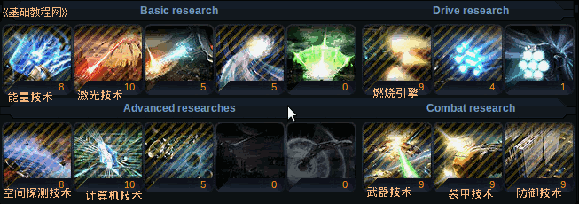
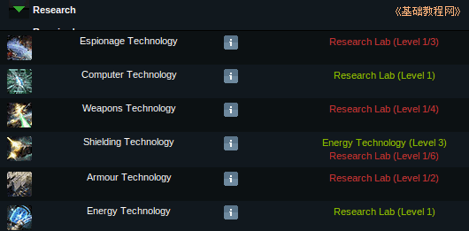
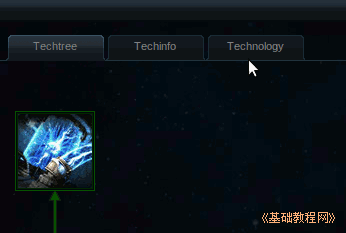
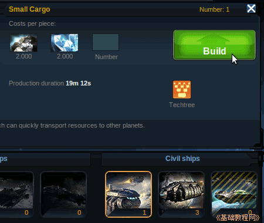
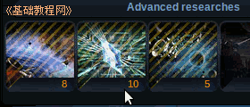
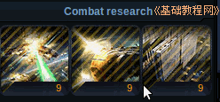

Ogame 银河帝国游戏新手入门
作者：TeliuTe 来源：基础教程网
建造飞船和构筑防御时，都需要各种科学技术，这些在研究中升级；
1）进入 http://ogame.org，点右上角红色的“Login”登录；
2）在出来的登录框中，依次选择自己的星球，输入用户名、密码后点“Login”登录；
3）在左侧的列表中，点击第五个“Research”研究链接；
4）在右侧出来各种技术图标，分别是基本技术、引擎技术和攻防技术；

5）基本技术中的能量技术、激光技术是其他技术的基础，引擎技术用于制造运输舰船和战斗舰船，攻防技术是自己的攻击、防御、装甲三维技术；

6）点击一个设施的技术信息，再点“Technology”科技标签，可以查看所有设施的技术信息；

7）这儿先把第一个能量技术“Energy Technology”升到2级，再把燃烧引擎“Combustion Drive”升到2级，就可以造小型运输舰了；

8）空间探测技术可以进行侦察和反间谍，计算机技术可以增加派遣舰队数量，太空技术可以进行殖民和探险活动；

9）攻击防御技术，可以提高自己的战斗力和防御能力；

10）其他技术可以点开后，看一下技术信息，需要的时候再提升等级；
本节学习了发展科技的基本操作，如果你成功地完成了练习，请继续学习下一课内容；
本教程由86团学校TeliuTe制作|著作权所有
基础教程网：http://teliute.org/
美丽的校园……
转载和引用本站内容，请保留版权信息和本站链接。